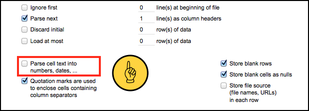
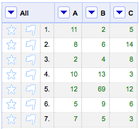
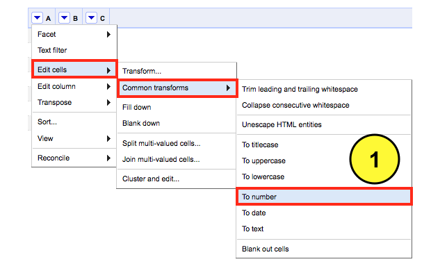
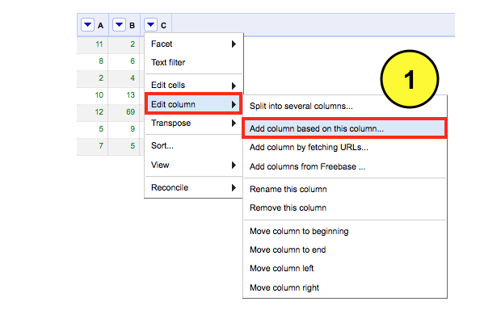
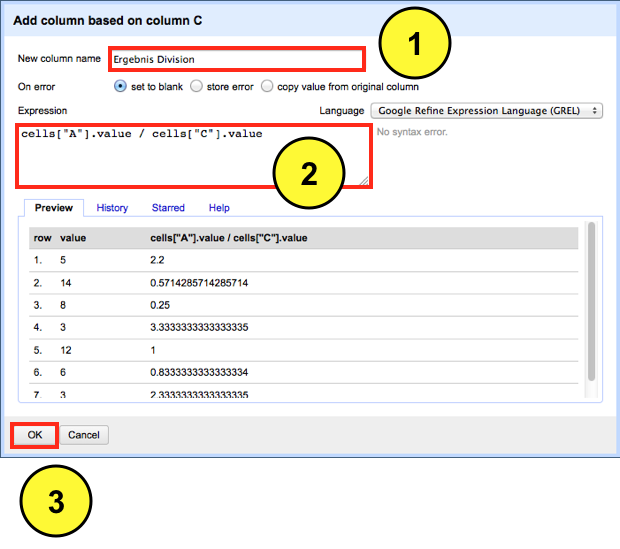

Published: 16. Juli, 2012 CONTENT NUTZUNG: CC BY-NC-SA 3.0
Rechnen mit OpenRefine? Ja, auch das ist möglich. Vor dem Start sollte man aber einige Dinge berücksichtigen. Wenn man neue Daten in OpenRefine importiert, empfehle ich das Häckchen
Parse cell text into numbers, dates … zu entfernen. Warum? Bei der Division und Multiplikation kann es zu unerwünschten Ergebnissen kommen, wenn OpenRefine den Zelleninhalt nicht richtig identifiziert. Um dies zu vermeiden, lasse ich das Häckchen weg.

Für die Demo habe ich ein absolut unspektakulären Datensatz gewählt – drei Spalten mit sieben Datenzeilen.

Als erstes muss ich OpenRefine sagen, dass es sich beim Inhalt der Zellen um numerische Werte handelt. Ich wähle aus dem Dropdown Menü der Spalte
“A” die Option
Edit cells anschließend das Submenü
Common transform und schließlich die Funktion
To number aus. Dieser Schritt muss für alle Spalten wiederholt werden, die numerische Werte enthalten.

Wenn die Transformation für alle Spalten abgeschlossen ist, kann die Rechnerrei beginnen. Ich wähle aus dem Dropdown Menü der Spalte
“C” die Option
Edit column und anschließend die Funktion
Add column based on this column aus. Ohne Bedenken hätte ich auch die Spalte
“A” oder
“B” auswählen können, um eine neue Spalte anzulegen.

Ein neues Fenster öffnet sich. Hier definiere ich zunächst den Namen der neuen Spalte
“Ergebnis Division“, in der das Ergebnis meiner Division abgelegt werden soll. Danach weise ich OpenRefine mit dem GREL Befehl
cells["A"].value / cells["C"].value die Zellen der Spalte
“A” durch die entsprechenden Zellen der Spalte
“C” zu dividieren. In der Voransicht lässt sich das Ergebnis überprüfen. Wenn das Ergebnis korrekt ist, genügt ein Klick auf
OK, um die Transformation abzuschließen.

Natürlich lassen sich auch andere Rechenaufgaben meistern.
Addition: cells["A"].value + cells["C"].value
Subtraktion: cells["A"].value - cells["C"].value
Division: cells["A"].value / cells["C"].value
Multiplikation: cells["A"].value * cells["C"].value
Durch die Hinzunahme der Klammer wird zunächst die Addition durchgeführt, bevor das vorläufige Ergebnis der spalte
“A+C” mit der Spalte
“B” multipliziert bzw. im Beispiel darunter dividiert wird.
(cells["A"].value + cells["C"].value) * cells["B"].value
(cells["A"].value - cells["C"].value) / cells["B"].value